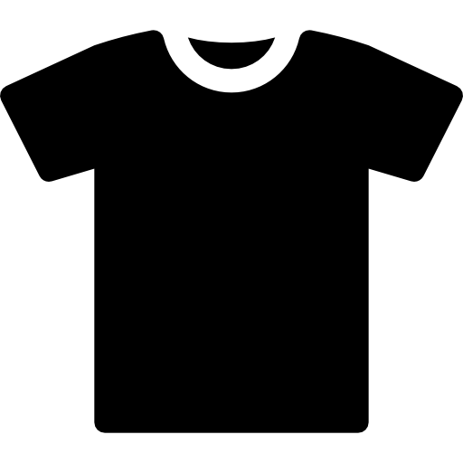

Before You Start
Before You Start
- ✔ Set aside separate piles or bags for different item types
- ✔ Check this guide before putting anything in a dumpster
- ✔ Give yourself at least one extra day to drop items off

Clothes & Textiles: Clothing, Shoes, Towels and linens, Backpacks
- ✔ Donate wearable clothes
- ✔ Bag worn or damaged textiles for textile recycling
- ✔ Do not throw clothes in dumpsters unless there is no other option
Electronics (E-Waste)
: Phones, Laptops, Tablets, Chargers, Headphones
- ✔ Back up your data
- ✔ Sign out of accounts and wipe personal information
- ✔ Remove cases and accessories if required
- ✔ Take devices to a designated e-waste drop-off location
Batteries
: Lithium-ion batteries, AA / AAA batteries, Rechargeable batteries
- ✔ Remove batteries from devices when possible
- ✔ Tape battery terminals if required
- ✔ Take batteries to an approved battery recycling location
- ✔ Never place batteries in trash or recycling bins
 Bedding & Mattress Toppers
Bedding & Mattress Toppers
: Mattress toppers, Pillows, Comforters
- ✔ Check if bedding is clean enough for donation
- ✔ Recycle mattress toppers through appropriate facilities
- ✔ Do not leave mattress items next to dumpsters
Small Appliances
: Fans, Coffee makers, Lamps, Mini electronics
- ✔ Test if item still works
- ✔ Donate working appliances when possible
- ✔ Recycle broken appliances as e-waste
Furniture & Large Items
: Chairs, Shelving, Small tables
- ✔ Look for campus or local donation options
- ✔ Schedule drop-off or pickup if required
- ✔ Avoid dumping large items in residential dumpsters
Final Check
- ✔ Double-check bins before disposal
- ✔ Scan QR code if unsure
- ✔ Ask yourself: Can this be reused, repaired, or recycled?